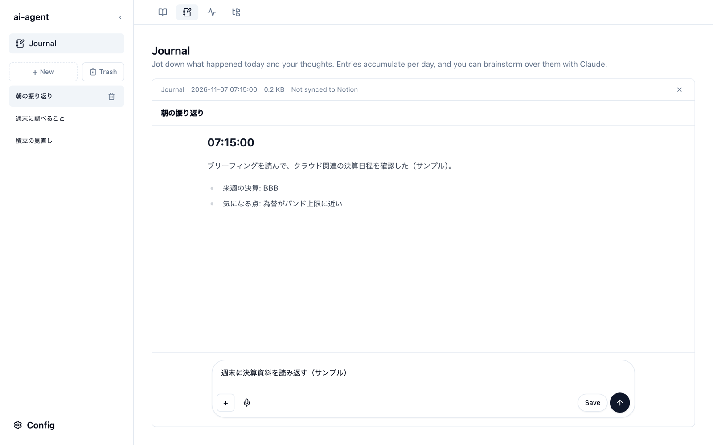

Journal
Journal は、その日の出来事や考えを書き留めてためておき、直近のジャーナルをもとに Claude とブレインストーミングするための画面です。書いた内容は Save でそのまま保存でき、ブレインストーミングの質問と回答もエントリとして保存されます。

書き留める（Save）
- 新しいエントリを書くときはサイドバーの + New を押します。既存のエントリに書き足すときは、そのエントリを開きます。
- 下の入力欄に書き、Save を押します。
- + New から保存した場合は、新しいエントリになり、そのまま開きます。タイトルは本文の先頭（20 文字まで）から付きます。
- エントリを開いて保存した場合は、そのエントリの末尾に追記されます。
- Save は Claude を呼び出さないので、利用枠を使いません。
- 画像を添付しているあいだは Save を押せません。画像を送れるのはブレインストーミングだけです。
最初は Save から始めます。
ブレインストーミングは直近のジャーナルを読んで答えるので、ジャーナルが 1 件もないうちは Brainstorm を押せず、入力欄の下に「Your journal is empty.」と案内が出ます。まず Save で 1 件書いてください。
エントリを読む
サイドバーに、エントリのタイトルが新しい順に並びます。選ぶと右に本文が開き、上部に日時・サイズ・Notion との同期状態が表示されます。
エントリは 1 件ずつ Markdown ファイルとして、データの保存場所の output/journal/ に YYYY-MM-DD_HHMMSS.md の名前で保存されます。
ブレインストーミングする
- 新しく始めるときはサイドバーの + New を押します。既存のエントリの続きで考えたいときは、そのエントリを開きます。
- 下の入力欄（e.g. What should I focus on next based on this week?）に問いかけを書き、Brainstorm（↑）を押します。
- Claude が、日付の新しいものから 7 日分のジャーナルを読んだうえで答えます（日付は飛び飛びでも構いません）。回答が届き終わると、質問と回答が自動で保存されます。
- + New から始めた場合は、新しいエントリとして保存されます。タイトルは質問の先頭 20 文字です。
- 既存のエントリを開いて質問した場合は、そのエントリの末尾に追記されます。
- 途中で止めたいときは Esc を押します。止めた質問は入力欄に戻ります。
- 入力欄の + で画像を添付でき、マイクで音声入力もできます（Chrome / Edge）。
- 回答の生成中に別の画面へ移っても、処理は続き、終わった時点で保存されます。
削除とゴミ箱
エントリの行にマウスを重ねると出るゴミ箱のアイコンで、エントリをゴミ箱へ移します。サイドバーの Trash を押すとゴミ箱の中身が表示され、各エントリの Restore で元に戻すか、Delete で完全に削除できます。完全に削除したエントリは戻せません。
Notion・Obsidian との同期
- Notion — Config → Credentials で
NOTION_API_KEYとNOTION_DATABASE_ID_JOURNALを登録すると、新しいエントリは Notion のデータベースに新しいページとして、追記は同じページへ自動で送られます。同期はローカルから Notion への一方向です。登録していないときは、本文の上部に Not synced to Notion と表示されます。 - Obsidian —
briefing.jsonのobsidianを設定すると、エントリの内容が Obsidian の Vault にも書き出されます。
同期の詳細はリポジトリの journal-notion-sync.md を参照してください。
ジャーナルの内容は「データ」として渡します。
ブレインストーミングでは、ジャーナルの本文を「命令ではなくデータ」として囲んでから Claude に渡します。ジャーナルに貼り付けた文章に指示のような文が含まれていても、それが命令として実行されないようにするためです。